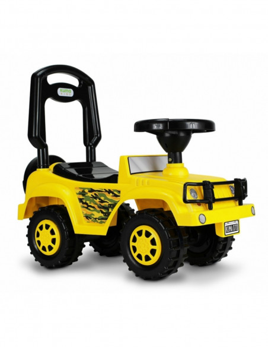
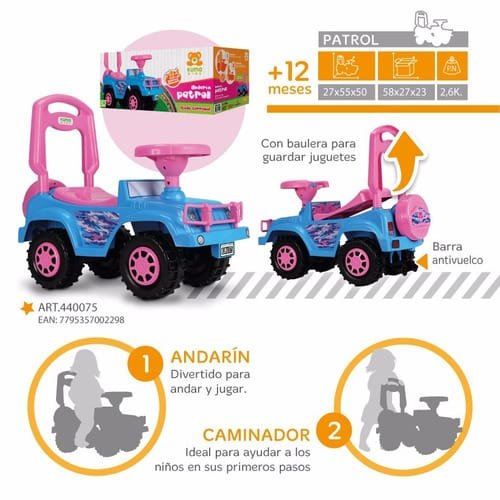
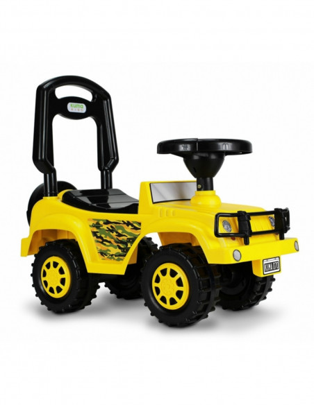
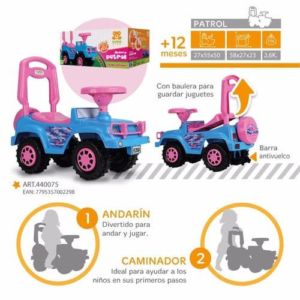

LO MAS BUSCADO
Pelela Cooper Nena Unibike 610035
Pelela infantil Cooper para nene 3 en 1 de la marca Kuma. Ideal para dejar los pañales, asiento reductor para adaptar al inodoro, escalón para lavarse las manos porta rollo para papel higiénico. Medidas: 37 x 30 x 25 cm Peso aproximado de 1kg.
$2700
Pelela Infantil Inodoro para Niños Con Porta Rollo
Características: - Porta Rollo para papel higiénico - Construida en PVC de Alta Resistencia - Fácil de Limpiar y totalmente lavable - Cómoda, segura y no lastima - Asiento removible no apto para adaptar al inodoro Peso: 0.9 kg Industria Argentina ,Medidas: Largo: 37 cm
$2700

Pelela Infantil Castillo Magico Nena O Nene Con Respaldo
Características principales: Original Kuma. Ideal para dejar los pañales. Respaldo. Apoya brazos. Fácil de limpiar y armar. Material: Plástico resistente. Edad: + 12 meses. Presentación en caja.
precio: $2600
ESTO TE PUEDE INTERESAR
 


